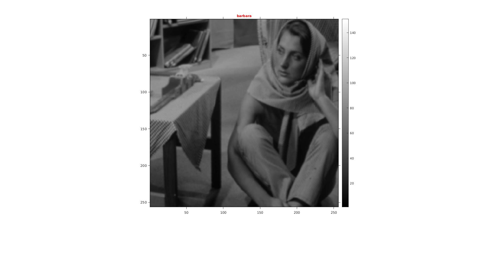
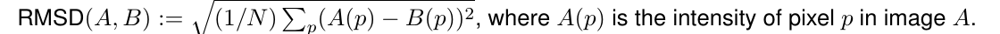
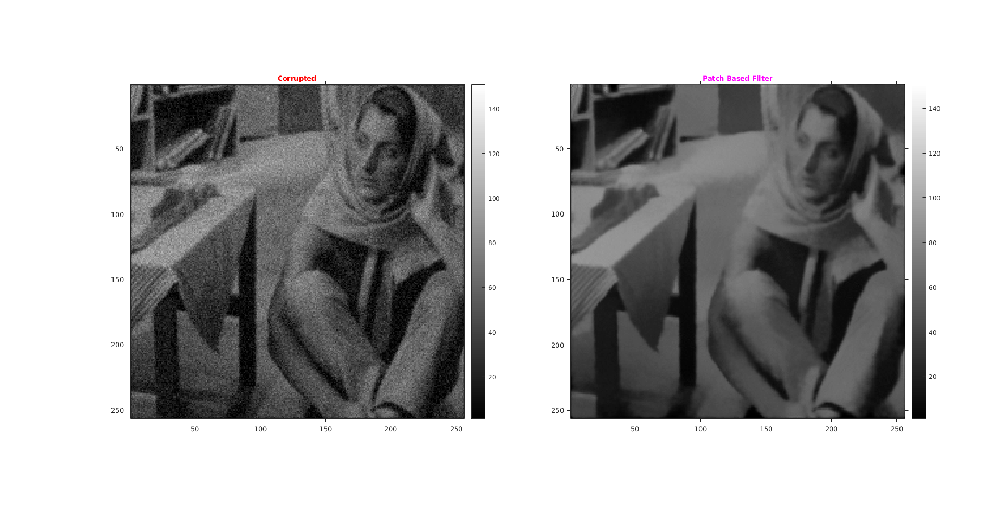
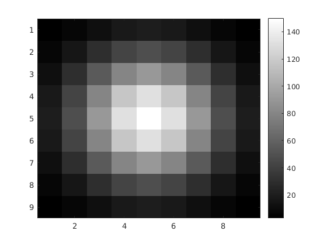
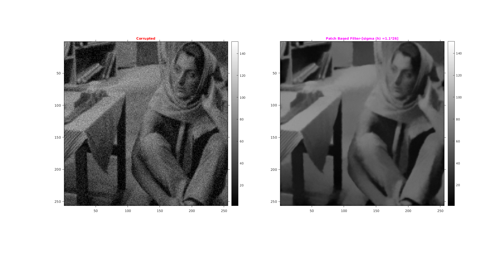

Assignment 2 -- Question 3
CS-663 Group-163059009,16305R011,16305R006
Contents
Intialization
Intializing the Color Map to 150 as max value of intensity in the image file is 100. Shrinking the image by 2 then adding the guassian blur of sigma 0.66file='../data/barbara.mat' cmap=150; scale=1/2; l = load(file); img1=l.imageOrig; imgShrink = imresize(img1,scale); GaussianFilter=fspecial('gaussian',[9,9],0.66); GaussianBlurResizedImage=imfilter(imgShrink,GaussianFilter);
Original Image
tic; img=GaussianBlurResizedImage; figure('name','Original Image'); imshow(GaussianBlurResizedImage,colormap(gray(cmap))); title('\fontsize{10}{\color{red}barbara}'); axis tight,axis on; o1 = get(gca, 'Position'); colorbar(),set(gca, 'Position', o1);
Patch base filtering
myPatchBasedFiltering function take image, then it corrupts the image by Guassain nosie with sigma 5% of the intensity range. After that it process the noisy by the Patch Based filtering. For performing the Patch Based filtering for Intensity region it use Gaussian Kernel with below configuration as input:
- Sigma (h): 26
- Sigma of Mask used to make patches Isotropic: 2
- Window Size: 25x25
- Patch Size: 9x9
Output: Returns three thing respectively
- Corruted/Noisy image
- Filtered Image
- Mask used to make patches Isotropic with sigma 2
Assumptions made
We resize the image by subsampling by a factor of 2 along each dimension, and then applied Gaussian blur of standard deviation around 0.66 pixel width to the resized image. This is done to reduce the time of the code
Comparison: Tuned parameter
Comparing the result of filtered image with corrupted and original image. RMSD is calculated between filtered and blurred(gaussian) downsampled image.

Time Taken
Time required for myPatchBasedFiltering takes approx 382 sec (6 mins) to produce result for image of size 256 x 256
Observation
With increasing sigma value RMSD value decrease but only to a certain value then it becomes constant.
Tuned Parametes
Tuned sigma for making patch isotropic is 2 and sigf for patch similarity is 26. RMSD between the filtered and Original image is 5.102581.
tic sigma=2; h=26; [corrupted,filtered,patchMask]=myPatchBasedFiltering(img,cmap,9,25,sigma,h); % Showing Nosiy image figure('name','barbara','units','normalized','outerposition',[0 0 1 1]); subplot(1,2,1); imshow(corrupted,colormap(gray(cmap))); title('\fontsize{10}{\color{red}Corrupted}'); axis tight,axis on; o1 = get(gca, 'Position'); colorbar(),set(gca, 'Position', o1); % Showing Filtered image subplot(1,2,2); imshow(filtered,colormap(gray(cmap))); title('\fontsize{10}{\color{magenta}Patch Based Filter}'); axis tight,axis on; o1 = get(gca, 'Position'); colorbar(),set(gca, 'Position', o1); % Calculating RMDS rmsError=sqrt(sum(sum((filtered-imgShrink).^2))/numel(imgShrink)); fprintf('Sigma:%d h:%d RMS of the image blur:%f\n',sigma,h,rmsError); toc pause(2);
Sigma:2 h:26 RMS of the image blur:5.102581 Elapsed time is 373.514881 seconds.
Patch Kernel
Mask used to make patches isotropic, as an image. Gaussian is used patch more isotropic (as compared to a square patch)
figure('name','Isotropic Mask'); title('\fontsize{10}{\color{magenta} Mask used to make patches isotropic, as an image.}'); imagesc(uint8(patchMask*cmap)),colormap(gray(cmap)),colorbar(); pause(2);
i) Comparison: (0.9 x tuned-sigma-intensity(h))
Sigma (h) is 0.9 * tuned sigma while othere parameters are constant. We are getting RMSD of the filtered image 4.922040.
tic %Patch Based Filtering [corrupted,filtered,patchMask]=myPatchBasedFiltering(img,cmap,9,25,sigma,0.9*h); % Showing Noisy image figure('name','barbara','units','normalized','outerposition',[0 0 1 1]); subplot(1,2,1); imshow(corrupted,colormap(gray(cmap))); title('\fontsize{10}{\color{red}Corrupted}'); axis tight,axis on; o1 = get(gca, 'Position'); colorbar(),set(gca, 'Position', o1); % Showing Filtered image subplot(1,2,2); imshow(filtered,colormap(gray(cmap))); title('\fontsize{10}{\color{magenta}Patch Based Filter-[sigma (h) =0.9*26]}'); axis tight,axis on; o1 = get(gca, 'Position'); colorbar(),set(gca, 'Position', o1); % Calculating RMSD rmsError=sqrt(sum(sum((filtered-imgShrink).^2))/numel(imgShrink)); fprintf('sigma:%d h:%d RMSD of filtered image:%f\n',sigma,h,rmsError); toc
sigma:2 h:23.400 RMSD of filtered image:4.922040 Elapsed time is 397.889722 seconds.
ii) Comparison: (1.1 x tuned-sigma (h))
Sigma (h) is 1.1 * tuned sigma while other parameters are constant. We are getting RMSD of the filtered image 5.296323
tic %Patch Based Filtering [corrupted,filtered,patchMask]=myPatchBasedFiltering(img,cmap,9,25,sigma, 1.1*h); % Showing Noisy image figure('name','barbara','units','normalized','outerposition',[0 0 1 1]); subplot(1,2,1); imshow(corrupted,colormap(gray(cmap))); title('\fontsize{10}{\color{red}Corrupted}'); axis tight,axis on; o1 = get(gca, 'Position'); colorbar(),set(gca, 'Position', o1); % Showing Filtered image subplot(1,2,2); imshow(filtered,colormap(gray(cmap))); title('\fontsize{10}{\color{magenta}Patch Based Filter-[sigma (h) =1.1*26]}'); axis tight,axis on; o1 = get(gca, 'Position'); colorbar(),set(gca, 'Position', o1); % Calculating RMSD rmsError=sqrt(sum(sum((filtered-imgShrink).^2))/numel(imgShrink)); fprintf('sigma:%d h:%d RMS of the image:%f\n',1.1*sigma,h,rmsError); toc;
sigma:2 h:28.6000 RMS of the image:5.296323 Elapsed time is 428.786847 seconds.